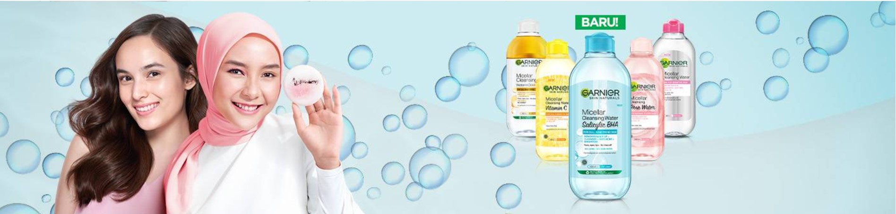
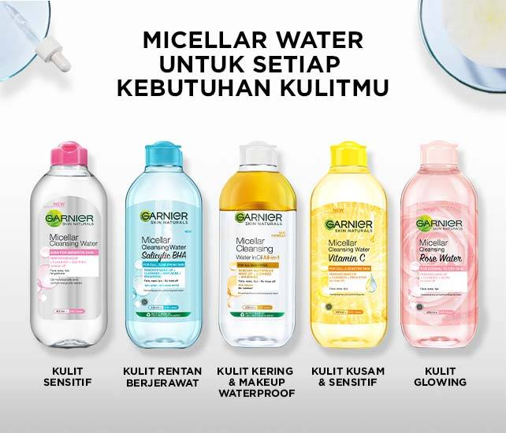
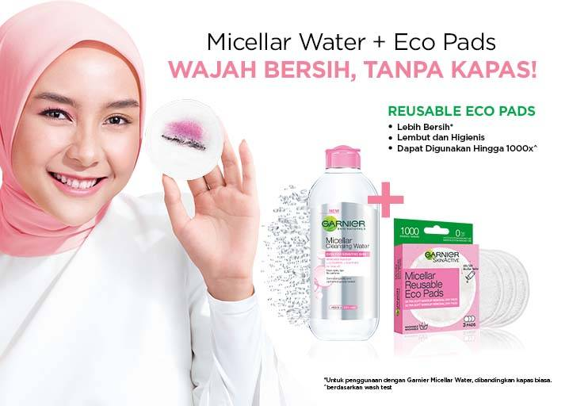
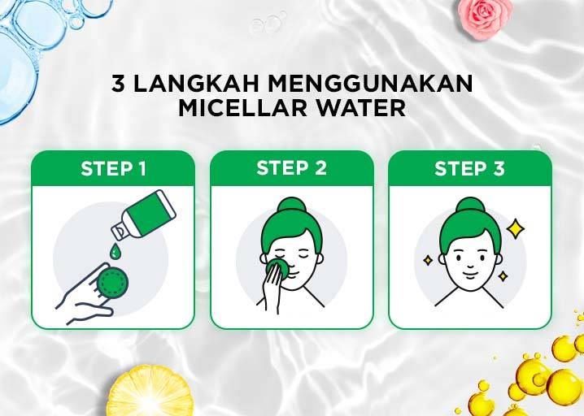
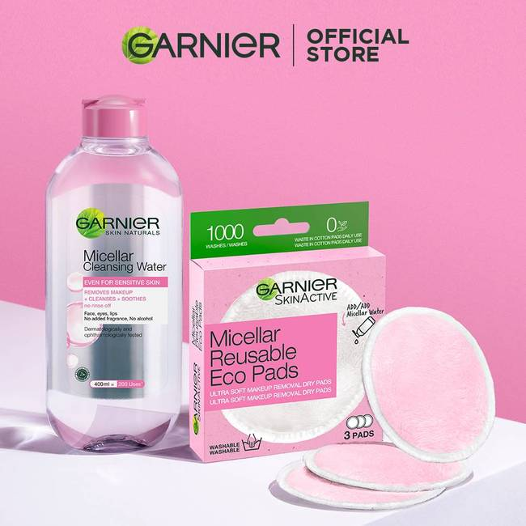

Home > micellar-water
Micellar Water Permbersihan Wajah untuk Setiap
Kebutuhan Kulitmu
Masih bingung dengan jerawat atau kulit kusam? Yakin sudah
membersihkan wajah dengan benar? Seperti yang kamu tahu debu,
kotoran, dan polusi udara jadi salah satu musuh utama kulit wajah.
Terlebih kamu yang sering melakukan kegiatan di luar ruangan.
Selain melakukan perawatan dan perlindungan, kamu juga wajib
membersihkan wajah dengan tepat agar kulit bebas jerawat, iritasi,
ataupun kusam. Salah satu caranya dengan melakukan double
cleansing menggunakan micellar water.
Micellar water biasanya menggunakan formula ringan yang bisa
menjadi pembersih make up sekaligus kulit wajah dari debu,
kotoran, dan polusi udara. Seperti, Garnier Micellar Water yang
memiliki formula yang lembut di kulit tanpa mengiritasi.
Apalagi kamu yang cenderung memiliki kulit berjerawat dan
sensitif. Melakukan double cleansing untuk kulit berjerawat adalah
hal yang wajib. Pilih pembersih make up dan wajah yang memiliki
kandungan salicylic acid. Misalnya produk terbaru dari Garnier yaitu
micellar water untuk kulit berminyak dan berjerawat yang sudah
mengandung formula aktif salicylic acid seperti Garnier Micellar
Water Salicylic BHA. Formula aktif salicylic acid ini dapat mengatasi
dan mencegah masalah jerawat.
Selain Garnier Micellar Water Salicylic BHA, masih ada 4 varian
Garnier Micellar Water kini yang sesuai dengan jenis dan masalah
kulit, ukurannya pun beragam. Mulai dari ukuran Garnier Micellar
Water kecil 125ml yang mudah dibawa dan ukuran besar 400ml
yang bisa membuatmu hemat.
5 Varian Micellar Water dari Garnier
mencari micellar water yang cocok dengan kondisi atau
permasalahan kulit wajah? Garnier punya solusinya!

Garnier Micellar Water Salicylic BHA
Garnier Micellar Water Biru yang kini sudah ditambahkan dengan
formula salicylic acid dan BHA adalah pilihan tepat
untuk kamu yang mencari micellar water untuk kulit
berjerawat. Garnier Micellar Water Salicylic Acid ini juga
cocok untuk kamu yang mencari micellar water untuk kulit
kombinasi yang cenderung berminyak dan rawan berjerawat.
Pembersih wajah Garnier ini ampuh mengangkat kotoran dan
debu sekaligus ampuh mengatasi permasalahan jerawat.
Manfaat Garnier Micellar Water Salicylic BHA:
Mengangkat makeup, kotoran, dan debu secara tuntas
Kandungan aktifnya ampuh cegah dan atasi jerawat
Mengurangi hingga 99% bakteri penyebab jerawat
Mengurangi kusam dan noda hitam pada kulit
LIHAT PRODUK

Garnier Micellar Water Rose
Micellar water untuk kulit kering dan glowing
diperkaya dengan rose water yang
menenangkan. Micellar water rose pertama
yang dapat membuat wajah terlihat glowing.
Manfaat Micellar Water Rose:
Membuat kulit glowing
Menutrisi kulit wajah yang kering
Mengurangi hingga 99% bakteri penyebab jerawat
Membersihkan kotoran, debu, polusi, dan make up
LIHAT PRODUK

Garnier Micellar Water Pink
Micellar water untuk kulit normal hingga sensitif dengan
teknologi micelles yang mampu mengikat kotoran seperti
magnet.
Manfaat Micellar Water Garnier Pink:
Membersihkan kulit wajah dengan lembut
Tidak membuat iritasi kulit wajah
Menghapus 99% make up dan kotoran
LIHAT PRODUK

Garnier Micellar Oil Infused Cleansing
Water
Garnier Oil Infused Micellar Water pembersih all in one
tanpa ribet. Formula argan oil infused micellar water untuk make
up waterproof yang juga cocok digunakan pemilik kulit
kering.
Manfaat Micellar Oil Infused Cleansing Water:
Mengangkat make up waterproof dengan mudah
Membersihkan kotoran dan polusi tanpa mengiritasi
Menutrisi kulit wajah
LIHAT PRODUK

Garnier Water Micellar Water Kuning
Garnier Micellar Water Vitamin C dengan formula
mencerahkan. Micellar water untuk kulit kusam.
Manfaat Garnier Micellar Water Kuning:
Mengangkat make up waterproof dengan mudah
Membersihkan kotoran dan polusi tanpa mengiritasi
Menutrisi kulit wajah
LIHAT PRODUK
Mengapa Kulit Wajah Membutuhkan Micellar Water?
Kulit wajah yang terpapar debu, kotoran, polusi, dan juga make up memerlukan pembersih
yang tangguh. Salah satunya dengan menggunakan micellar water sebagai pembersih
pertama. Garnier memiliki 5 rekomendasi micellar water yang bisa disesuaikan dengan masalah
dan juga jenis kulit.
Perlu diketahui ada tiga fungsi micellar water yang bisa kamu dapatkan dalam satu produk.
Manfaat micellar water yang pertama sudah pasti membersihkan kulit wajah secara
menyeluruh. Micelles kandungan micellar water Garnier mampu mengikat kotoran hingga make
up seperti magnet sehingga kamu bisa mendapatkan kulit yang bersih sempurna. Kedua,
manfaat micellar water Garnier adalah menutrisi kulit dari dalam. Ketiga, semua micellar water
Garnier memiliki efek menenangkan kulit.

Alasan Kenapa Double Cleansing Itu Penting
Sudah melakukan double cleansing setiap hari? Jika belum, ini saatnya kamu menambahkan
double cleansing di rangkaian perawatan wajah harianmu. Caranya pastikan kamu
menggunakan micellar water double cleanse sebagai tahap pembersihan wajah setiap harinya.
Langkah pertama gunakan Garnier pembersih wajah dari varian produk micellar water yang
sesuai dengan jenis dan permasalahan kulitmu. Menggunakan micellar water bisa
membersihkan sekaligus menghilangkan debu, kotoran, bahkan polusi yang tidak terlihat oleh
mata telanjang.
Selain itu micellar water bisa menjadi pembersih make up yang lembut sehingga kulit tidak
teriritasi. Micellar water adalah pembersih make up yang bagus digunakan oleh setiap
jenis kulit. Tapi perlu diingat kamu juga perlu menerapkan cara membersihkan make up yang benar
untuk hasil yang maksimal.
Melakukan double cleansing juga bisa mencerahkan wajah lho. Micellar water adalah salah satu
skincare untuk mencerahkan wajah dan wajib ada di skincare regime harianmu. Selain
mencerahkan micellar water juga menjadi salah satu cara mencegah jerawat.
Cara mencegah timbulnya jerawat salah satunya dengan memastikan kulit wajah bersih dari
kotoran dan debu. Kamu bisa menggunakan micellar water untuk kulit berjerawat varian biru
dari Garnier.
Alasan lain kenapa kamu wajib melakukan double cleansing adalah untuk menjaga kulit wajah
glowing. Membersihkan wajah secara tepat sudah jadi rahasia muka glowing alami sejak dulu.
Cara agar wajah glowing alami tentu saja dengan membersihkan kulit dengan produk yang
sesuai. Garnier memiliki 5 varian micellar water yang bisa digunakan setiap hari. Misalnya saja
micellar water untuk kulit berminyak bisa menggunakan varian berwarna biru.

Cara Menggunakan Micellar Water
Masih bingung cara memakai micellar water yang benar seperti apa? Ikuti langkah mudah
berikut ini!
1. Tuang micellar water pada kapas wajah atau kapas pembersih wajah Garnier Micellar
Reusable Eco Pads.
2. Tekan perlahan kapas di seluruh area wajah.
3. Bila perlu usap kapas pembersih wajah agar kotoran atau make up terangkat sempurna.

TIPS DAN ARTIKEL TENTANG MICELLAR WATER
SEE MORE >

Garnier Micellar Eco Pads,
Kapas Pembersih Wajah yang ...
KLIK UNTUK BACA >
Memangnya Ada Pembersih Makeup
yang Aman Bagi Semua Je...
Selain Pembersih Makeup, Micellar
Water Punya Banyak K...
KLIK UNTUK BACA >
Garnier Micellar Eco Pads,
Kapas Pembersih Wajah yang ...
Ini Dia Rekomendasi Makeup Remover
Andalan untuk Ria...
KLIK UNTUK BACA >